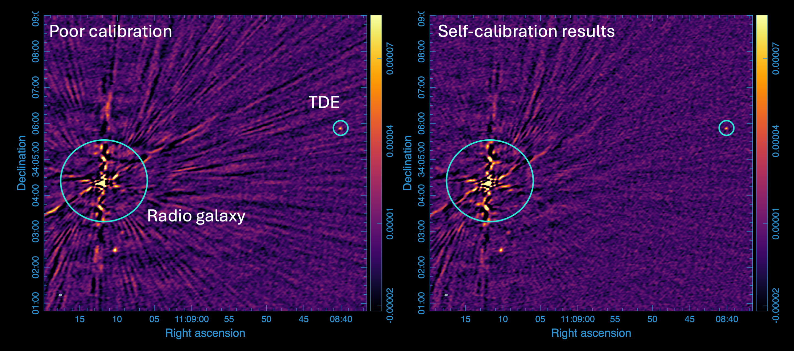

Code
I developed an automatic imaging and flux measurement pipeline for observations of point sources taken by the Very Large Array (VLA) radio interferometer, which I maintain here. This pipeline runs on a calibrated measurement set, scrapes the listfile for observation details, creates images (including those for half-bands), and runs imfit tasks to extract a flux density integrated over one beam centered on the target. There is nothing novel here, but I found it extremely worthwhile to automate the tclean task while also improving reproducibility. There may be helpful functions for your purposes within this repository.
I am always working to improve this pipeline, so please get in touch if you have ideas. An undergraduate student and I are working to incorporate the VLA calibration pipeline as a first step so that the pipeline can be run as soon as the uncalibrated data are available. Stay tuned!

I also wrapped an existing automatical self-calibration repository to be suited for half-band SED observations, which I maintain here. We ran the existing self-calibration pipeline on a 1 mJy source and found, on average, dynamic range improvements of 1.7x, signal-to-noise ratio (SNR) enhancements of about 1.25x, and artifact-free fields near our target source (see image above). We therefore wanted to automate it for our purposes. Again, there is nothing novel in my repository, but it allows us to submit several (often 12) concurrent automatic self-calibration tasks to the National Radio Astronomy Observatory (NRAO) computing cluster in just a few lines of code, and have beautifully calibrated images in about a week. This repository basically just submits batches of batch jobs, but it's almost entirely automated!